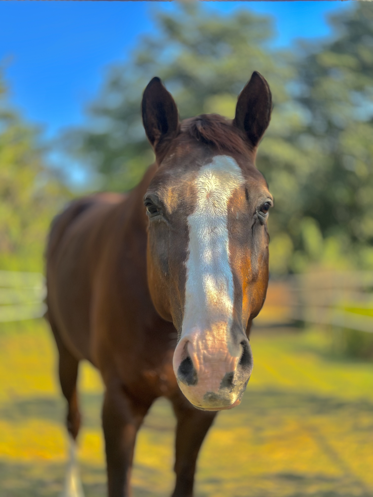

Companions
Every horse a story. Every story a scar, a gift, a lesson written in dust and silence.

A living storm in midnight muscle. He didn't just test my horsemanship — he dismantled it, and rebuilt something truer in its place.
Read His Story
Aggressive on the outside, bottomless on the inside. He taught me that fire and fragility have always lived in the same body.
Read His Story
Named after the immortal horse of Achilles. He carried that ancient weight in his stillness and his grace.
Read His Story
A gemstone of a horse — hard on the surface, luminous within. He made you earn every single step.
Read His Story
Gone too soon, but never gone. She lived with an elegance that made the world stand still and watch.
Read Her Story
The prince. Twenty years of wisdom carried in a body that still moves like a young king claiming his land.
Read His Story
Steady as a mountain, honest as silence. He never asked for much — only that you show up and mean it.
Read His Story
She arrived wild and left refined — though I suspect it was she who refined me, and not the other way around.
Read Her Story